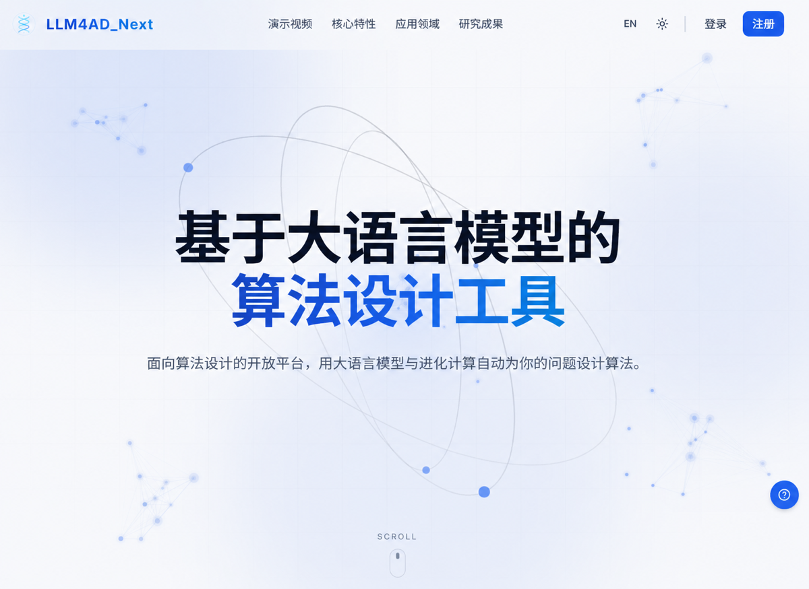

Open-source · Agent Memory
MindMemOS
面向 AI Agent 的开源长期记忆系统，将对话、文件、工具轨迹、反馈与离线反思转化为可检索、可更新、项目隔离的长期记忆。
跨Agent记忆管理
Memory x Skills协同演进
一键接入
免费使用
MindScale 将分散的前沿算法研究沉淀为开放、可复用的技术能力，帮助行业 Agent 吸收专业知识、积累任务经验、持续自我演进，并以更低成本、更高可信度完成复杂任务。
面向 AI Agent 的开源长期记忆系统，将对话、文件、工具轨迹、反馈与离线反思转化为可检索、可更新、项目隔离的长期记忆。
下一代自动算法设计平台：从自然语言问题描述出发，自动生成可运行的评估器、算法骨架与进化搜索工程，并在执行反馈中持续优化。

围绕 Agent 的构建、学习、推理与评测形成完整研究布局，并向算法发现、科学研究、时序预测和 EDA 等复杂任务持续延伸。
行业 Agent 从原型走向真实业务，需要同时突破构建效率、经验演进、训推成本与科学评测四类基础问题。
行业应用依赖人工把专家经验和业务流程转化为 Prompt 与 Workflow，开发、调优和维护成本高，亟需可自动生成和优化的 Agent 构建技术。
传统知识库主要保存文档，Agent 上线后产生的推理轨迹、工具经验和用户反馈难以沉淀与复用，限制了专业能力持续提升。
多任务、高并发和 Agentic 多步推理显著增加 Thinking Budget，需要根据任务难度动态平衡推理效果、时延与算力成本。
Agent 输出和执行轨迹日益复杂，结果评分不足以解释失败原因，需要高效、鲁棒、可诊断且覆盖安全边界的专业测评体系。
让 Agent 在模型权重保持不变或数据有限的条件下，持续利用上下文、历史反馈和任务经验改进执行策略。
把行业流程、长期记忆、工具经验和任务反馈转化为可执行、可复用、可持续更新的 Agent 能力。
基于 EvoFabric 将文档形式的标准操作流程自动转换为可执行 GraphEngine，降低行业 Workflow 开发和调优成本。
Agent 在任务环境中主动探索能力边界，通过多路径推理、反思、经验学习与迭代验证持续改进执行表现。
统一管理对话、文件、工具轨迹、用户反馈和离线反思，形成可检索、可更新、可跨 Agent 复用的长期记忆系统。
将检索、记忆、Skills 与工具编排视为可自主决策的任务环境，根据问题复杂度动态生成并优化 Agent Harness。
融合大模型、进化搜索、自动评测与执行反馈，推动算法研发从人工设计和手动调参走向机器自主发现。
面向自动算法设计的一站式开放平台，统一问题、组件、搜索方法、评估器和执行器，支持算法生成、验证、比较与持续进化。
利用大模型生成启发式算法，并通过进化搜索持续改进候选方案，为组合优化等复杂问题提供通用算法发现范式。
面向长思维链和多步 Agent 推理，研究更轻量的推理表征、动态计算分配与系统级加速方法。
在线识别并截断无效或重复的中间推理，动态控制 Thinking Budget，在尽量保持任务效果的同时减少 Token 与时延。
把 KV Cache 从一次性推理缓存转化为可复用的轻量表示，为快慢思考切换、状态复用与长程推理提供新路径。
从最终答案扩展到完整执行轨迹，以更低成本评估 Agent 能力，诊断失败根因，并建立面向行业应用的安全可信边界。
分析评测样本冗余性，在保持评测代表性和结论一致性的前提下缩小测试集规模。
研究可校准、可解释的 LLM-as-Judge，降低模型偏见、提示敏感性与领域不一致问题。
利用推理和工具调用轨迹进行细粒度能力诊断，定位失败步骤并评估安全、鲁棒和可信性。
将通用 Agent 算法能力带入需要长程探索、精确优化与专业知识协同的科学和工程任务。
探索自主提出假设、设计实验、调用科学工具并根据结果持续修正研究路线的自主研究 Agent。
结合时序 Skills、大小模型协同和领域知识构建，提升复杂业务时序任务的适应性与可解释性。
面向良率分析、缺陷根因、版图理解、封装与设计空间搜索，研究数据、工具和专家知识协同。
MindScale 将持续开放论文、代码、文档和评测结果，欢迎研究者、开发者与行业伙伴共同探索下一代 Agent 技术。